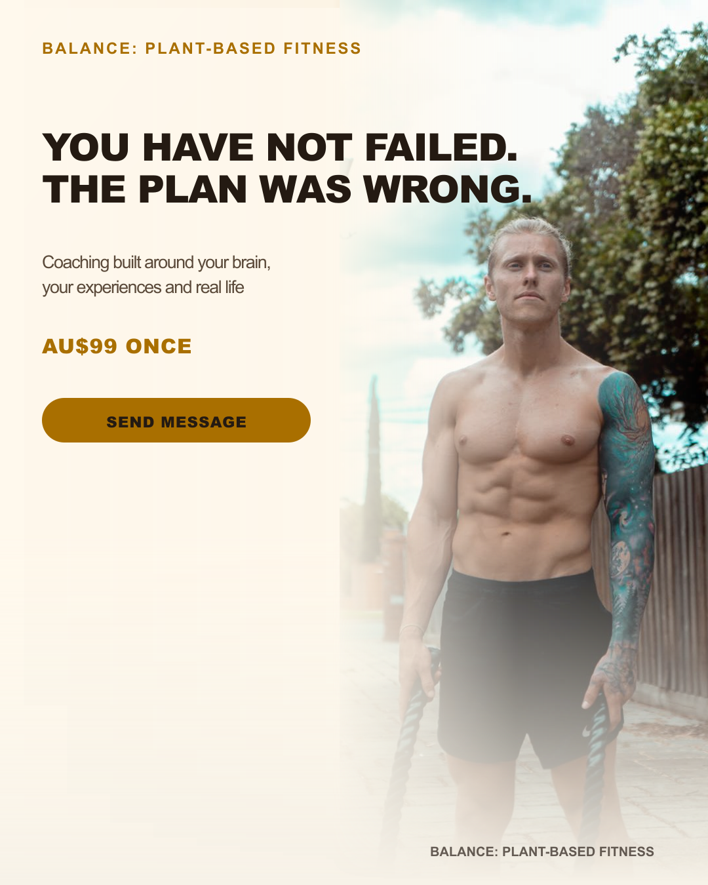

AD 1
You have not failed. The plan was wrong.
You have not failed. The plan was wrong. It was not built around your brain, what you have been through, or what you are dealing with now. Inside Balance, I coach plant-based people with small, clear steps that fit their current starting point. The Founders Pass is AU$99 once. Message “BALANCE” and I will show you what is included.
Headline: You have not failed. The plan was wrong.
Description: Plant-based coaching built around real life